# List of years
years <- 2010:2020
# Loop over each year
for(year in years) {
# Construct the tibble name
tibble_name <- paste0("det", year)
# Evaluate the tibble name to get the actual tibble
tibble <- eval(parse(text = tibble_name))
# Perform the operations
tibble <- tibble |>
select(-starts_with("units_in_structure"),
-starts_with("rooms"),
-starts_with("bedrooms"),
-starts_with("housing_tenure"),
-starts_with("vehicles_available"),
-starts_with("house_heating"),
-starts_with("selected_characteristics"),
-starts_with("occupants_per_room"),
-starts_with("year_householder"),
-starts_with("selected_monthly_owner_costs"),
-starts_with("mortgage_status"),
-starts_with("year_structure_built"),
-contains("grapi"),
-housing_occupancy,
-value,
-mortgage_status,
-selected_monthly_owner_costs_smoc,
-gross_rent,
-selected_monthly_owner_costs_as_a_percentage_of_household_income_smocapi,
-selected_monthly_owner_costs_smoc,
-gross_rent_as_a_percentage_of_household_income_grapi) |>
mutate(year = year)
tibble <- tibble |>
mutate(label_grouping = str_trim(label_grouping)) |>
filter(label_grouping == 'Estimate') |>
select(-label_grouping)
#Assign the modified tibble back to the original tibble
assign(tibble_name, tibble, envir = .GlobalEnv)
}
det_data <- bind_rows(det2010, det2011, det2012,det2013, det2014, det2015, det2016, det2017, det2018, det2019, det2020) |>
select(year, everything())
det_data <- det_data |>
unite('occupied_housing_units', contains('occupied_housing_units'), na.rm = TRUE) |>
unite('vacant_housing_units', contains('vacant_housing_units'), na.rm = TRUE) |>
unite('homeowner_vacancy_rate', contains('homeowner_vacancy_rate'), na.rm = TRUE) |>
unite('rental_vacancy_rate', contains('rental_vacancy_rate'), na.rm = TRUE) |>
unite("value_less_than_50_000", contains("less_than_50_000"), na.rm = TRUE) |>
unite("value_50_000_to_99_999", contains("50_000_to_99_999"), na.rm = TRUE) |>
unite('value_100_000_to_149_999', contains('100_000_to_149_999'), na.rm = TRUE) |>
unite('value_150_000_to_199_999', contains('150_000_to_199_999'), na.rm = TRUE) |>
unite('value_200_000_to_299_999', contains('200_000_to_299_999'), na.rm = TRUE) |>
unite('value_300_000_to_499_999', contains('300_000_to_499_999'), na.rm = TRUE) |>
unite('value_500_000_to_999_999', contains('500_000_to_999_999'), na.rm = TRUE) |>
unite('value_1_000_000_or_more', contains('1_000_000_or_more'), na.rm = TRUE) |>
unite('value_median_dollars', value_median_dollars, value_owner_occupied_units_median_dollars, na.rm = TRUE) |>
unite('gross_rent_median_dollars', gross_rent_median_dollars, gross_rent_occupied_units_paying_rent_median_dollars, na.rm = TRUE) |>
unite('gross_rent_no_rent_paid', contains('no_rent_paid'), na.rm = TRUE) |>
unite('gross_rent_1_500_or_more', gross_rent_1_500_or_more, gross_rent_occupied_units_paying_rent_1_500_or_more, na.rm = TRUE) |>
unite("gross_rent_less_than_200", contains('rent_less_than_200'), na.rm = TRUE) |>
unite("gross_rent_200_to_299", contains('rent_200_to_299'), na.rm = TRUE) |>
unite("gross_rent_300_to_499", contains('rent_300_to_499'), na.rm = TRUE) |>
unite("gross_rent_500_to_749", contains('rent_500_to_749'), na.rm = TRUE) |>
unite("gross_rent_750_to_999", contains('rent_750_to_999'), na.rm = TRUE) |>
unite("gross_rent_1_000_to_1_499", contains('1_000_to_1_499'), na.rm = TRUE)
det_data <- det_data |>
mutate(across(where(is.character), ~str_replace_all(., ',', ''))) |>
mutate_all(as.numeric) |>
mutate(structures_built = case_when(
year == 2014 ~ 6,
year == 2015 ~ 45,
year == 2016 ~ 173,
year == 2017 ~ 202,
year == 2018 ~ 467,
year == 2019 ~ 1115,
year == 2020 ~ 99))
det_data <- det_data |>
mutate(gross_rent_less_than_500 = gross_rent_less_than_200+gross_rent_200_to_299+gross_rent_300_to_499,
gross_rent_500_to_999 = gross_rent_500_to_749 + gross_rent_750_to_999,
gross_rent_1_500_or_more_occupied = gross_rent_occupied_units_paying_rent_1_500_to_1_999+gross_rent_occupied_units_paying_rent_2_000_to_2_499+gross_rent_occupied_units_paying_rent_2_500_to_2_999+gross_rent_occupied_units_paying_rent_3_000_or_more,
.keep = "unused")
det_data <- det_data |>
unite("gross_rent_less_than_500", contains('rent_less_than_500'), na.rm = TRUE) |>
unite("gross_rent_500_to_999", contains('rent_500_to_999'), na.rm = TRUE) |>
unite("gross_rent_1_500_or_more", contains('1_500_or_more'), na.rm = TRUE)
det_data <- det_data |>
select(year, structures_built, contains('median'), starts_with('value'), gross_rent_less_than_500, gross_rent_500_to_999, gross_rent_1_000_to_1_499, gross_rent_1_500_or_more, starts_with('gross'), everything()) |>
mutate(across(everything(), as.numeric))School Climate and Student Growth
Honor Code Statement
We strongly encourage students to form study groups and students may discuss and work on assignments in groups. We expect that each student understands their own submission. As such, students must write their submissions independently and clearly disclose the names of all other students who were part of their study group. Additionally, lifting code or solutions directly from the internet (e.g., Google, GitHub, Stack Overflow) is a violation of the Stanford Honor Code. We take academic honesty and Honor Code violations extremely seriously and expect the same of students. If you have questions about what may or may not constitute an Honor Code violation, please reach out the teaching team.
Email: michael.okey@stanford.edu, mlchrzan@stanford.edu, lozuna@stanford.edu
SUID: ???, 05745732, ???
Study Group: The authors
I acknowledge and agree to abide by the Honor Code.
Signed: Michael O’key, Michael Leon Chrzan, Laisha Ozuna
Research Question
What relationship, if any, exists between gentrification, as operationalized by the Pearman and Greene (2022) model, and educational outcomes in Detroit between 2010 and 2020?
Import Data
Gentrification Data
ACS Housing Data Cleaning
ACS Education Data Cleaning
colnames(acs_detroit_2010) <- acs_detroit_2010[1, ]
acs_detroit_2010 <- acs_detroit_2010[-1, ]
colnames(acs_detroit_2011) <- acs_detroit_2011[1, ]
acs_detroit_2011 <- acs_detroit_2011[-1, ]
colnames(acs_detroit_2012) <- acs_detroit_2012[1, ]
acs_detroit_2012 <- acs_detroit_2012[-1, ]
colnames(acs_detroit_2013) <- acs_detroit_2013[1, ]
acs_detroit_2013 <- acs_detroit_2013[-1, ]
colnames(acs_detroit_2014) <- acs_detroit_2014[1, ]
acs_detroit_2014 <- acs_detroit_2014[-1, ]
colnames(acs_detroit_2015) <- acs_detroit_2015[1, ]
acs_detroit_2015 <- acs_detroit_2015[-1, ]
colnames(acs_detroit_2016) <- acs_detroit_2016[1, ]
acs_detroit_2016 <- acs_detroit_2016[-1, ]
colnames(acs_detroit_2017) <- acs_detroit_2017[1, ]
acs_detroit_2017 <- acs_detroit_2017[-1, ]
colnames(acs_detroit_2018) <- acs_detroit_2018[1, ]
acs_detroit_2018 <- acs_detroit_2018[-1, ]
colnames(acs_detroit_2019) <- acs_detroit_2019[1, ]
acs_detroit_2019 <- acs_detroit_2019[-1, ]
colnames(acs_detroit_2020) <- acs_detroit_2020[1, ]
acs_detroit_2020 <- acs_detroit_2020[-1, ]#parse for educational attainment data
educ_detroit_2010 <- acs_detroit_2010 |>
select(1:2, starts_with("Estimate!!EDUCATIONAL ATTAINMENT!!"),
starts_with("Percent!!EDUCATIONAL ATTAINMENT!!")) |>
clean_names()
educ_detroit_2011 <- acs_detroit_2011 |>
select(1:2, starts_with("Estimate!!EDUCATIONAL ATTAINMENT!!"),
starts_with("Percent!!EDUCATIONAL ATTAINMENT!!")) |>
clean_names()
educ_detroit_2012 <- acs_detroit_2012 |>
select(1:2, starts_with("Estimate!!EDUCATIONAL ATTAINMENT!!"),
starts_with("Percent!!EDUCATIONAL ATTAINMENT!!")) |>
clean_names()
educ_detroit_2013 <- acs_detroit_2013 |>
select(1:2, starts_with("Estimate!!EDUCATIONAL ATTAINMENT!!"),
starts_with("Percent!!EDUCATIONAL ATTAINMENT!!")) |>
clean_names()
educ_detroit_2014 <- acs_detroit_2014 |>
select(1:2, starts_with("Estimate!!EDUCATIONAL ATTAINMENT!!"),
starts_with("Percent!!EDUCATIONAL ATTAINMENT!!")) |>
clean_names()
educ_detroit_2015 <- acs_detroit_2015 |>
select(1:2, starts_with("Estimate!!EDUCATIONAL ATTAINMENT!!"),
starts_with("Percent!!EDUCATIONAL ATTAINMENT!!")) |>
clean_names()
educ_detroit_2016 <- acs_detroit_2016 |>
select(1:2, starts_with("Estimate!!EDUCATIONAL ATTAINMENT!!"),
starts_with("Percent!!EDUCATIONAL ATTAINMENT!!")) |>
clean_names()
educ_detroit_2017 <- acs_detroit_2017 |>
select(1:2, starts_with("Estimate!!EDUCATIONAL ATTAINMENT!!"),
starts_with("Percent!!EDUCATIONAL ATTAINMENT!!")) |>
clean_names()
educ_detroit_2018 <- acs_detroit_2018 |>
select(1:2, starts_with("Estimate!!EDUCATIONAL ATTAINMENT!!"),
starts_with("Percent!!EDUCATIONAL ATTAINMENT!!")) |>
clean_names()
educ_detroit_2019 <- acs_detroit_2019 |>
select(1:2, starts_with("Estimate!!EDUCATIONAL ATTAINMENT!!"),
starts_with("Percent!!EDUCATIONAL ATTAINMENT!!")) |>
clean_names()
educ_detroit_2020 <- acs_detroit_2020 |>
select(1:2, starts_with("Estimate!!EDUCATIONAL ATTAINMENT!!"),
starts_with("Percent!!EDUCATIONAL ATTAINMENT!!")) |>
clean_names()convert_to_dbl <- function(x) {
ifelse(str_detect(x, "^\\d+\\.?\\d*$"), as.numeric(x), x)
}
# apply <dbl> to select columns and add year
educ_detroit_2010 <- educ_detroit_2010 |>
mutate_all(convert_to_dbl) |>
mutate(year = 2010) |>
select(-estimate_educational_attainment_percent_high_school_graduate_or_higher, -estimate_educational_attainment_percent_bachelors_degree_or_higher)
educ_detroit_2011 <- educ_detroit_2011 |>
mutate_all(convert_to_dbl) |>
mutate(year = 2011) |>
select(-estimate_educational_attainment_percent_high_school_graduate_or_higher, -estimate_educational_attainment_percent_bachelors_degree_or_higher)
educ_detroit_2012 <- educ_detroit_2012 |>
mutate_all(convert_to_dbl) |>
mutate(year = 2012) |>
select(-estimate_educational_attainment_percent_high_school_graduate_or_higher, -estimate_educational_attainment_percent_bachelors_degree_or_higher)
educ_detroit_2013 <- educ_detroit_2013 |>
mutate_all(convert_to_dbl) |>
mutate(year = 2013) |>
rename(estimate_educational_attainment_less_than_9th_grade =
"estimate_educational_attainment_population_25_years_and_over_less_than_9th_grade",
estimate_educational_attainment_9th_to_12th_grade_no_diploma = "estimate_educational_attainment_population_25_years_and_over_9th_to_12th_grade_no_diploma",
estimate_educational_attainment_high_school_graduate_includes_equivalency = "estimate_educational_attainment_population_25_years_and_over_high_school_graduate_includes_equivalency",
estimate_educational_attainment_some_college_no_degree = "estimate_educational_attainment_population_25_years_and_over_some_college_no_degree",
estimate_educational_attainment_associates_degree = "estimate_educational_attainment_population_25_years_and_over_associates_degree",
estimate_educational_attainment_bachelors_degree = "estimate_educational_attainment_population_25_years_and_over_bachelors_degree",
estimate_educational_attainment_graduate_or_professional_degree = "estimate_educational_attainment_population_25_years_and_over_graduate_or_professional_degree",
percent_educational_attainment_less_than_9th_grade = "percent_educational_attainment_population_25_years_and_over_less_than_9th_grade",
percent_educational_attainment_9th_to_12th_grade_no_diploma = "percent_educational_attainment_population_25_years_and_over_9th_to_12th_grade_no_diploma",
percent_educational_attainment_high_school_graduate_includes_equivalency = "percent_educational_attainment_population_25_years_and_over_high_school_graduate_includes_equivalency",
percent_educational_attainment_some_college_no_degree = "percent_educational_attainment_population_25_years_and_over_some_college_no_degree",
percent_educational_attainment_associates_degree = "percent_educational_attainment_population_25_years_and_over_associates_degree",
percent_educational_attainment_bachelors_degree = "percent_educational_attainment_population_25_years_and_over_bachelors_degree",
percent_educational_attainment_graduate_or_professional_degree = "percent_educational_attainment_population_25_years_and_over_graduate_or_professional_degree") |>
select(-estimate_educational_attainment_percent_high_school_graduate_or_higher, -estimate_educational_attainment_percent_bachelors_degree_or_higher)
educ_detroit_2014 <- educ_detroit_2014 |>
mutate_all(convert_to_dbl) |>
mutate(year = 2014) |>
rename(estimate_educational_attainment_less_than_9th_grade =
"estimate_educational_attainment_population_25_years_and_over_less_than_9th_grade",
estimate_educational_attainment_9th_to_12th_grade_no_diploma = "estimate_educational_attainment_population_25_years_and_over_9th_to_12th_grade_no_diploma",
estimate_educational_attainment_high_school_graduate_includes_equivalency = "estimate_educational_attainment_population_25_years_and_over_high_school_graduate_includes_equivalency",
estimate_educational_attainment_some_college_no_degree = "estimate_educational_attainment_population_25_years_and_over_some_college_no_degree",
estimate_educational_attainment_associates_degree = "estimate_educational_attainment_population_25_years_and_over_associates_degree",
estimate_educational_attainment_bachelors_degree = "estimate_educational_attainment_population_25_years_and_over_bachelors_degree",
estimate_educational_attainment_graduate_or_professional_degree = "estimate_educational_attainment_population_25_years_and_over_graduate_or_professional_degree",
percent_educational_attainment_less_than_9th_grade = "percent_educational_attainment_population_25_years_and_over_less_than_9th_grade",
percent_educational_attainment_9th_to_12th_grade_no_diploma = "percent_educational_attainment_population_25_years_and_over_9th_to_12th_grade_no_diploma",
percent_educational_attainment_high_school_graduate_includes_equivalency = "percent_educational_attainment_population_25_years_and_over_high_school_graduate_includes_equivalency",
percent_educational_attainment_some_college_no_degree = "percent_educational_attainment_population_25_years_and_over_some_college_no_degree",
percent_educational_attainment_associates_degree = "percent_educational_attainment_population_25_years_and_over_associates_degree",
percent_educational_attainment_bachelors_degree = "percent_educational_attainment_population_25_years_and_over_bachelors_degree",
percent_educational_attainment_graduate_or_professional_degree = "percent_educational_attainment_population_25_years_and_over_graduate_or_professional_degree") |>
select(-estimate_educational_attainment_percent_high_school_graduate_or_higher, -estimate_educational_attainment_percent_bachelors_degree_or_higher)
educ_detroit_2015 <- educ_detroit_2015 |>
mutate_all(convert_to_dbl) |>
mutate(year = 2015) |>
rename(estimate_educational_attainment_less_than_9th_grade =
"estimate_educational_attainment_population_25_years_and_over_less_than_9th_grade",
estimate_educational_attainment_9th_to_12th_grade_no_diploma = "estimate_educational_attainment_population_25_years_and_over_9th_to_12th_grade_no_diploma",
estimate_educational_attainment_high_school_graduate_includes_equivalency = "estimate_educational_attainment_population_25_years_and_over_high_school_graduate_includes_equivalency",
estimate_educational_attainment_some_college_no_degree = "estimate_educational_attainment_population_25_years_and_over_some_college_no_degree",
estimate_educational_attainment_associates_degree = "estimate_educational_attainment_population_25_years_and_over_associates_degree",
estimate_educational_attainment_bachelors_degree = "estimate_educational_attainment_population_25_years_and_over_bachelors_degree",
estimate_educational_attainment_graduate_or_professional_degree = "estimate_educational_attainment_population_25_years_and_over_graduate_or_professional_degree",
percent_educational_attainment_less_than_9th_grade = "percent_educational_attainment_population_25_years_and_over_less_than_9th_grade",
percent_educational_attainment_9th_to_12th_grade_no_diploma = "percent_educational_attainment_population_25_years_and_over_9th_to_12th_grade_no_diploma",
percent_educational_attainment_high_school_graduate_includes_equivalency = "percent_educational_attainment_population_25_years_and_over_high_school_graduate_includes_equivalency",
percent_educational_attainment_some_college_no_degree = "percent_educational_attainment_population_25_years_and_over_some_college_no_degree",
percent_educational_attainment_associates_degree = "percent_educational_attainment_population_25_years_and_over_associates_degree",
percent_educational_attainment_bachelors_degree = "percent_educational_attainment_population_25_years_and_over_bachelors_degree",
percent_educational_attainment_graduate_or_professional_degree = "percent_educational_attainment_population_25_years_and_over_graduate_or_professional_degree") |>
select(-estimate_educational_attainment_percent_high_school_graduate_or_higher, -estimate_educational_attainment_percent_bachelors_degree_or_higher)
educ_detroit_2016 <- educ_detroit_2016 |>
mutate_all(convert_to_dbl) |>
mutate(year = 2016) |>
rename(estimate_educational_attainment_less_than_9th_grade =
"estimate_educational_attainment_population_25_years_and_over_less_than_9th_grade",
estimate_educational_attainment_9th_to_12th_grade_no_diploma = "estimate_educational_attainment_population_25_years_and_over_9th_to_12th_grade_no_diploma",
estimate_educational_attainment_high_school_graduate_includes_equivalency = "estimate_educational_attainment_population_25_years_and_over_high_school_graduate_includes_equivalency",
estimate_educational_attainment_some_college_no_degree = "estimate_educational_attainment_population_25_years_and_over_some_college_no_degree",
estimate_educational_attainment_associates_degree = "estimate_educational_attainment_population_25_years_and_over_associates_degree",
estimate_educational_attainment_bachelors_degree = "estimate_educational_attainment_population_25_years_and_over_bachelors_degree",
estimate_educational_attainment_graduate_or_professional_degree = "estimate_educational_attainment_population_25_years_and_over_graduate_or_professional_degree",
percent_educational_attainment_less_than_9th_grade = "percent_educational_attainment_population_25_years_and_over_less_than_9th_grade",
percent_educational_attainment_9th_to_12th_grade_no_diploma = "percent_educational_attainment_population_25_years_and_over_9th_to_12th_grade_no_diploma",
percent_educational_attainment_high_school_graduate_includes_equivalency = "percent_educational_attainment_population_25_years_and_over_high_school_graduate_includes_equivalency",
percent_educational_attainment_some_college_no_degree = "percent_educational_attainment_population_25_years_and_over_some_college_no_degree",
percent_educational_attainment_associates_degree = "percent_educational_attainment_population_25_years_and_over_associates_degree",
percent_educational_attainment_bachelors_degree = "percent_educational_attainment_population_25_years_and_over_bachelors_degree",
percent_educational_attainment_graduate_or_professional_degree = "percent_educational_attainment_population_25_years_and_over_graduate_or_professional_degree") |>
select(-estimate_educational_attainment_percent_high_school_graduate_or_higher, -estimate_educational_attainment_percent_bachelors_degree_or_higher)
#Converstion Continued (blocks combined into one)
educ_detroit_2017 <- educ_detroit_2017 |>
mutate_all(convert_to_dbl) |>
mutate(year = 2017) |>
rename(estimate_educational_attainment_less_than_9th_grade =
"estimate_educational_attainment_population_25_years_and_over_less_than_9th_grade",
estimate_educational_attainment_9th_to_12th_grade_no_diploma = "estimate_educational_attainment_population_25_years_and_over_9th_to_12th_grade_no_diploma",
estimate_educational_attainment_high_school_graduate_includes_equivalency = "estimate_educational_attainment_population_25_years_and_over_high_school_graduate_includes_equivalency",
estimate_educational_attainment_some_college_no_degree = "estimate_educational_attainment_population_25_years_and_over_some_college_no_degree",
estimate_educational_attainment_associates_degree = "estimate_educational_attainment_population_25_years_and_over_associates_degree",
estimate_educational_attainment_bachelors_degree = "estimate_educational_attainment_population_25_years_and_over_bachelors_degree",
estimate_educational_attainment_graduate_or_professional_degree = "estimate_educational_attainment_population_25_years_and_over_graduate_or_professional_degree",
percent_educational_attainment_less_than_9th_grade = "percent_educational_attainment_population_25_years_and_over_less_than_9th_grade",
percent_educational_attainment_9th_to_12th_grade_no_diploma = "percent_educational_attainment_population_25_years_and_over_9th_to_12th_grade_no_diploma",
percent_educational_attainment_high_school_graduate_includes_equivalency = "percent_educational_attainment_population_25_years_and_over_high_school_graduate_includes_equivalency",
percent_educational_attainment_some_college_no_degree = "percent_educational_attainment_population_25_years_and_over_some_college_no_degree",
percent_educational_attainment_associates_degree = "percent_educational_attainment_population_25_years_and_over_associates_degree",
percent_educational_attainment_bachelors_degree = "percent_educational_attainment_population_25_years_and_over_bachelors_degree",
percent_educational_attainment_graduate_or_professional_degree = "percent_educational_attainment_population_25_years_and_over_graduate_or_professional_degree") |>
select(-estimate_educational_attainment_percent_high_school_graduate_or_higher, -estimate_educational_attainment_percent_bachelors_degree_or_higher)
educ_detroit_2018 <- educ_detroit_2018 |>
mutate_all(convert_to_dbl) |>
mutate(year = 2018) |>
rename(estimate_educational_attainment_less_than_9th_grade =
"estimate_educational_attainment_population_25_years_and_over_less_than_9th_grade",
estimate_educational_attainment_9th_to_12th_grade_no_diploma = "estimate_educational_attainment_population_25_years_and_over_9th_to_12th_grade_no_diploma",
estimate_educational_attainment_high_school_graduate_includes_equivalency = "estimate_educational_attainment_population_25_years_and_over_high_school_graduate_includes_equivalency",
estimate_educational_attainment_some_college_no_degree = "estimate_educational_attainment_population_25_years_and_over_some_college_no_degree",
estimate_educational_attainment_associates_degree = "estimate_educational_attainment_population_25_years_and_over_associates_degree",
estimate_educational_attainment_bachelors_degree = "estimate_educational_attainment_population_25_years_and_over_bachelors_degree",
estimate_educational_attainment_graduate_or_professional_degree = "estimate_educational_attainment_population_25_years_and_over_graduate_or_professional_degree") |> #add percentages
mutate(percent_educational_attainment_population_25_years_and_over = estimate_educational_attainment_population_25_years_and_over,
percent_educational_attainment_less_than_9th_grade = round((estimate_educational_attainment_less_than_9th_grade / estimate_educational_attainment_population_25_years_and_over) * 100, 1),
percent_educational_attainment_9th_to_12th_grade_no_diploma = round((estimate_educational_attainment_9th_to_12th_grade_no_diploma / estimate_educational_attainment_population_25_years_and_over) * 100, 1),
percent_educational_attainment_high_school_graduate_includes_equivalency = round((estimate_educational_attainment_high_school_graduate_includes_equivalency / estimate_educational_attainment_population_25_years_and_over) * 100, 1),
percent_educational_attainment_some_college_no_degree = round((estimate_educational_attainment_some_college_no_degree / estimate_educational_attainment_population_25_years_and_over) * 100, 1),
percent_educational_attainment_associates_degree = round((estimate_educational_attainment_associates_degree / estimate_educational_attainment_population_25_years_and_over) * 100, 1),
percent_educational_attainment_bachelors_degree = round((estimate_educational_attainment_bachelors_degree / estimate_educational_attainment_population_25_years_and_over) * 100, 1),
percent_educational_attainment_graduate_or_professional_degree = round((estimate_educational_attainment_graduate_or_professional_degree / estimate_educational_attainment_population_25_years_and_over) * 100, 1),
percent_educational_attainment_percent_high_school_graduate_or_higher = round((estimate_educational_attainment_population_25_years_and_over_high_school_graduate_or_higher / estimate_educational_attainment_population_25_years_and_over) * 100, 1),
percent_educational_attainment_percent_bachelors_degree_or_higher = round((estimate_educational_attainment_population_25_years_and_over_bachelors_degree_or_higher / estimate_educational_attainment_population_25_years_and_over) * 100, 1)) |>
select(-estimate_educational_attainment_population_25_years_and_over_high_school_graduate_or_higher, -estimate_educational_attainment_population_25_years_and_over_bachelors_degree_or_higher)
educ_detroit_2019 <- educ_detroit_2019 |>
mutate_all(convert_to_dbl) |>
mutate(year = 2019) |>
rename(estimate_educational_attainment_less_than_9th_grade =
"estimate_educational_attainment_population_25_years_and_over_less_than_9th_grade",
estimate_educational_attainment_9th_to_12th_grade_no_diploma = "estimate_educational_attainment_population_25_years_and_over_9th_to_12th_grade_no_diploma",
estimate_educational_attainment_high_school_graduate_includes_equivalency = "estimate_educational_attainment_population_25_years_and_over_high_school_graduate_includes_equivalency",
estimate_educational_attainment_some_college_no_degree = "estimate_educational_attainment_population_25_years_and_over_some_college_no_degree",
estimate_educational_attainment_associates_degree = "estimate_educational_attainment_population_25_years_and_over_associates_degree",
estimate_educational_attainment_bachelors_degree = "estimate_educational_attainment_population_25_years_and_over_bachelors_degree",
estimate_educational_attainment_graduate_or_professional_degree = "estimate_educational_attainment_population_25_years_and_over_graduate_or_professional_degree",
percent_educational_attainment_less_than_9th_grade = "percent_educational_attainment_population_25_years_and_over_less_than_9th_grade",
percent_educational_attainment_9th_to_12th_grade_no_diploma = "percent_educational_attainment_population_25_years_and_over_9th_to_12th_grade_no_diploma",
percent_educational_attainment_high_school_graduate_includes_equivalency = "percent_educational_attainment_population_25_years_and_over_high_school_graduate_includes_equivalency",
percent_educational_attainment_some_college_no_degree = "percent_educational_attainment_population_25_years_and_over_some_college_no_degree",
percent_educational_attainment_associates_degree = "percent_educational_attainment_population_25_years_and_over_associates_degree",
percent_educational_attainment_bachelors_degree = "percent_educational_attainment_population_25_years_and_over_bachelors_degree",
percent_educational_attainment_graduate_or_professional_degree = "percent_educational_attainment_population_25_years_and_over_graduate_or_professional_degree",
percent_educational_attainment_percent_high_school_graduate_or_higher = "percent_educational_attainment_population_25_years_and_over_high_school_graduate_or_higher",
percent_educational_attainment_percent_bachelors_degree_or_higher = "percent_educational_attainment_population_25_years_and_over_bachelors_degree_or_higher"
) |>
select(-estimate_educational_attainment_population_25_years_and_over_high_school_graduate_or_higher, -estimate_educational_attainment_population_25_years_and_over_bachelors_degree_or_higher)
educ_detroit_2020 <- educ_detroit_2020 |>
mutate_all(convert_to_dbl) |>
mutate(year = 2020) |>
rename(estimate_educational_attainment_less_than_9th_grade =
"estimate_educational_attainment_population_25_years_and_over_less_than_9th_grade",
estimate_educational_attainment_9th_to_12th_grade_no_diploma = "estimate_educational_attainment_population_25_years_and_over_9th_to_12th_grade_no_diploma",
estimate_educational_attainment_high_school_graduate_includes_equivalency = "estimate_educational_attainment_population_25_years_and_over_high_school_graduate_includes_equivalency",
estimate_educational_attainment_some_college_no_degree = "estimate_educational_attainment_population_25_years_and_over_some_college_no_degree",
estimate_educational_attainment_associates_degree = "estimate_educational_attainment_population_25_years_and_over_associates_degree",
estimate_educational_attainment_bachelors_degree = "estimate_educational_attainment_population_25_years_and_over_bachelors_degree",
estimate_educational_attainment_graduate_or_professional_degree = "estimate_educational_attainment_population_25_years_and_over_graduate_or_professional_degree",
percent_educational_attainment_less_than_9th_grade = "percent_educational_attainment_population_25_years_and_over_less_than_9th_grade",
percent_educational_attainment_9th_to_12th_grade_no_diploma = "percent_educational_attainment_population_25_years_and_over_9th_to_12th_grade_no_diploma",
percent_educational_attainment_high_school_graduate_includes_equivalency = "percent_educational_attainment_population_25_years_and_over_high_school_graduate_includes_equivalency",
percent_educational_attainment_some_college_no_degree = "percent_educational_attainment_population_25_years_and_over_some_college_no_degree",
percent_educational_attainment_associates_degree = "percent_educational_attainment_population_25_years_and_over_associates_degree",
percent_educational_attainment_bachelors_degree = "percent_educational_attainment_population_25_years_and_over_bachelors_degree",
percent_educational_attainment_graduate_or_professional_degree = "percent_educational_attainment_population_25_years_and_over_graduate_or_professional_degree",
percent_educational_attainment_percent_high_school_graduate_or_higher = "percent_educational_attainment_population_25_years_and_over_high_school_graduate_or_higher",
percent_educational_attainment_percent_bachelors_degree_or_higher = "percent_educational_attainment_population_25_years_and_over_bachelors_degree_or_higher"
) |>
select(-estimate_educational_attainment_population_25_years_and_over_high_school_graduate_or_higher, -estimate_educational_attainment_population_25_years_and_over_bachelors_degree_or_higher)educ_detroit <- bind_rows(educ_detroit_2010,
educ_detroit_2011,
educ_detroit_2012,
educ_detroit_2013,
educ_detroit_2014,
educ_detroit_2015,
educ_detroit_2016,
educ_detroit_2017,
educ_detroit_2018,
educ_detroit_2019,
educ_detroit_2020)Combining All ACS Data
acs_all_data <- full_join(educ_detroit, det_data,
by = 'year')
acs_all_data <- acs_all_data |>
select(year, everything())Education Outcomes Data
NCES Data Cleaning
#Converstion of all variables to a character value for joining
all_objects <- ls()
#Filter the list of objects based on the naming convention "ncesYYYY"
nces_objects <- all_objects[str_detect(all_objects, "^nces\\d{4}$")]
#Loop over the filtered list of objects
for (obj_name in nces_objects) {
#Get the actual object from its name
obj <- get(obj_name)
#Check if the object is a tibble
if (is_tibble(obj)) {
#Convert all variables to character
obj <- obj |>
mutate(across(everything(), as.character))
#Filtering for DPSCD District Level Data
obj <- obj |>
filter(district_code == 82015 & entity_type == "LEA District") |>
mutate(year = substr(obj_name, 5, 8))
#Assign the modified object back to its original name in the global environment
assign(obj_name, obj, envir = .GlobalEnv)
}
}
nces_all_combined <- bind_rows(nces2010,
nces2011,
nces2012,
nces2013,
nces2014,
nces2015,
nces2016,
nces2017,
nces2018)
nces_all_combined <- nces_all_combined |>
select(year,
contains('enrollment'),
contains('percent'),
contains('rate'),
-grade_11_reading_percent_ready,
-grade_11_science_percent_ready)
nces_all_combined# A tibble: 9 × 38
year total_enrollment male_enrollment female_enrollment
<chr> <chr> <chr> <chr>
1 2010 88218 44721 43497
2 2011 77594 39300 38294
3 2012 70326 35686 34640
4 2013 50172 25235 24937
5 2014 49870 25167 24703
6 2015 47959 24110 23849
7 2016 46912 23701 23211
8 2017 45720 23191 22529
9 2018 50875 25937 24938
# ℹ 34 more variables: american_indian_enrollment <chr>,
# asian_enrollment <chr>, african_american_enrollment <chr>,
# hispanic_enrollment <chr>, hawaiian_enrollment <chr>,
# white_enrollment <chr>, two_or_more_races_enrollment <chr>,
# kindergarten_enrollment <chr>, grade_1_enrollment <chr>,
# grade_2_enrollment <chr>, grade_3_enrollment <chr>,
# grade_4_enrollment <chr>, grade_5_enrollment <chr>, …#Define the list of dataframes and years
nces_ready_dfs <- list(nces2016_readiness, nces2017_readiness, nces2018_readiness)
years <- c(2016, 2017, 2018)
#Initialize an empty list to store the results
results <- list()
#Loop over each dataframe
for(i in seq_along(nces_ready_dfs)) {
# Perform the operations
results[[i]] <- nces_ready_dfs[[i]] |>
filter(district_code == '82015' & building_name == 'All Buildings' & subgroup == 'All Students') |>
mutate(year = years[i]) |>
select(year,
math_percent_ready,
ebrw_percent_ready,
all_subject_percent_ready)
}
#Assign the results back to the original variables
nces2016_readiness <- results[[1]]
nces2017_readiness <- results[[2]]
nces2018_readiness <- results[[3]]
#Bind Years into One Tibble
nces_16_18_readiness <- bind_rows(nces2016_readiness,
nces2017_readiness,
nces2018_readiness)
nces_16_18_readiness# A tibble: 3 × 4
year math_percent_ready ebrw_percent_ready all_subject_percent_ready
<dbl> <chr> <chr> <chr>
1 2016 14.6000 34.2000 13.2000
2 2017 13.2000 37.0000 12.3000
3 2018 11.6000 30.9000 10.6000 Combining all NCES Data
nces_16_18_readiness <- nces_16_18_readiness |>
mutate(year = as.character(year))
nces_all_data <- full_join(nces_all_combined, nces_16_18_readiness,
by = 'year') |>
unite("grade_11_math_percent_ready",
contains('math_percent_ready'),
na.rm = TRUE) |>
unite("grade_11_english_percent_ready",
grade_11_english_percent_ready, ebrw_percent_ready,
na.rm = TRUE) |>
unite("grade_11_all_subject_percent_ready",
contains('all_subject_percent_ready'),
na.rm = TRUE) |>
mutate(grade_11_math_percent_ready = str_replace_all(grade_11_math_percent_ready, "0_", ""),
grade_11_english_percent_ready = str_replace_all(grade_11_english_percent_ready, "0_", ""),
grade_11_all_subject_percent_ready = str_replace_all(grade_11_all_subject_percent_ready, "0_", ""))
nces_all_data <- nces_all_data |>
mutate(across(everything(), as.numeric))
nces_all_data# A tibble: 9 × 38
year total_enrollment male_enrollment female_enrollment
<dbl> <dbl> <dbl> <dbl>
1 2010 88218 44721 43497
2 2011 77594 39300 38294
3 2012 70326 35686 34640
4 2013 50172 25235 24937
5 2014 49870 25167 24703
6 2015 47959 24110 23849
7 2016 46912 23701 23211
8 2017 45720 23191 22529
9 2018 50875 25937 24938
# ℹ 34 more variables: american_indian_enrollment <dbl>,
# asian_enrollment <dbl>, african_american_enrollment <dbl>,
# hispanic_enrollment <dbl>, hawaiian_enrollment <dbl>,
# white_enrollment <dbl>, two_or_more_races_enrollment <dbl>,
# kindergarten_enrollment <dbl>, grade_1_enrollment <dbl>,
# grade_2_enrollment <dbl>, grade_3_enrollment <dbl>,
# grade_4_enrollment <dbl>, grade_5_enrollment <dbl>, …Construction Data
unique(det_parcel$property_class_desc)[1] "RESIDENTIAL-IMPROVED" "RESIDENTIAL-VACANT"
[3] "RESIDENTIAL CONDOMINIUMS"housing_built <- det_parcel |>
filter(year_built >= 2009 & year_built < 2019) |>
group_by(year_built) |>
summarise(housing_built = n()) |>
ungroup() |>
rename(year = year_built)
housing_built# A tibble: 10 × 2
year housing_built
<dbl> <int>
1 2009 16
2 2010 14
3 2011 88
4 2012 13
5 2013 21
6 2014 78
7 2015 32
8 2016 9
9 2017 18
10 2018 19Combining All Data
acs_nces_data <- full_join(acs_all_data, nces_all_data,
by = 'year') |>
filter(year < 2019) |>
select(-geographic_area_name, -geography)
acs_nces_data# A tibble: 9 × 79
year estimate_educational_att…¹ estimate_educational…² estimate_educational…³
<dbl> <dbl> <dbl> <dbl>
1 2010 442004 27245 72716
2 2011 455297 29789 74513
3 2012 446530 29868 71881
4 2013 433725 25803 67228
5 2014 430812 24593 66409
6 2015 432410 26702 61323
7 2016 429990 23142 62824
8 2017 436996 22471 59526
9 2018 438146 25156 57811
# ℹ abbreviated names:
# ¹estimate_educational_attainment_population_25_years_and_over,
# ²estimate_educational_attainment_less_than_9th_grade,
# ³estimate_educational_attainment_9th_to_12th_grade_no_diploma
# ℹ 75 more variables:
# estimate_educational_attainment_high_school_graduate_includes_equivalency <dbl>,
# estimate_educational_attainment_some_college_no_degree <dbl>, …all_data <- filter(housing_built, year > 2009) |>
full_join(acs_nces_data, housing_built,
by = 'year')
all_data# A tibble: 9 × 80
year housing_built estimate_educational_attainment_p…¹ estimate_educational…²
<dbl> <int> <dbl> <dbl>
1 2010 14 442004 27245
2 2011 88 455297 29789
3 2012 13 446530 29868
4 2013 21 433725 25803
5 2014 78 430812 24593
6 2015 32 432410 26702
7 2016 9 429990 23142
8 2017 18 436996 22471
9 2018 19 438146 25156
# ℹ abbreviated names:
# ¹estimate_educational_attainment_population_25_years_and_over,
# ²estimate_educational_attainment_less_than_9th_grade
# ℹ 76 more variables:
# estimate_educational_attainment_9th_to_12th_grade_no_diploma <dbl>,
# estimate_educational_attainment_high_school_graduate_includes_equivalency <dbl>,
# estimate_educational_attainment_some_college_no_degree <dbl>, …Calculating Gentrification
all_data_gentrify <- all_data |>
mutate(rent_delta = gross_rent_median_dollars - lag(gross_rent_median_dollars),
value_delta = value_median_dollars - lag(value_median_dollars),
edu_level_delta = percent_educational_attainment_percent_bachelors_degree_or_higher - lag(percent_educational_attainment_percent_bachelors_degree_or_higher),
housing_delta = housing_built - lag(housing_built)) |>
mutate(gentrifying = if_else((rent_delta > 0 | value_delta > 0) & edu_level_delta > 0 & housing_delta > 0, TRUE, FALSE)) |>
select(year, rent_delta, value_delta, edu_level_delta, housing_delta, gentrifying, everything())
all_data_gentrify# A tibble: 9 × 85
year rent_delta value_delta edu_level_delta housing_delta gentrifying
<dbl> <dbl> <dbl> <dbl> <int> <lgl>
1 2010 NA NA NA NA NA
2 2011 14 -9300 0.200 74 TRUE
3 2012 1 -11400 0.100 -75 FALSE
4 2013 -1 -9300 0.700 8 FALSE
5 2014 -5 -5300 0.800 57 FALSE
6 2015 -9 -2800 0.400 -46 FALSE
7 2016 7 -1300 0.700 -23 FALSE
8 2017 19 1800 -0.300 9 FALSE
9 2018 25 2900 0.9 1 TRUE
# ℹ 79 more variables: housing_built <int>,
# estimate_educational_attainment_population_25_years_and_over <dbl>,
# estimate_educational_attainment_less_than_9th_grade <dbl>,
# estimate_educational_attainment_9th_to_12th_grade_no_diploma <dbl>,
# estimate_educational_attainment_high_school_graduate_includes_equivalency <dbl>,
# estimate_educational_attainment_some_college_no_degree <dbl>,
# estimate_educational_attainment_associates_degree <dbl>, …Visualizations
Verifying Gentrification Part a - Increase in Housing Construction
all_data_gentrify |>
ggplot() +
geom_col(data = filter(all_data_gentrify, housing_delta > 0),
aes(x = year,
y = housing_delta),
fill = 'darkgreen') +
geom_col(data = filter(all_data_gentrify, housing_delta <= 0),
aes(x = year,
y = housing_delta),
fill = 'gray') +
labs(title = 'Changes in Housing Built in Detroit, Year over Year',
subtitle = 'Determining Gentrification, Part 1 - Does Housing Construction Increase?',
x = 'Year',
y = 'Housing Built Since Previous Year') +
theme_minimal() 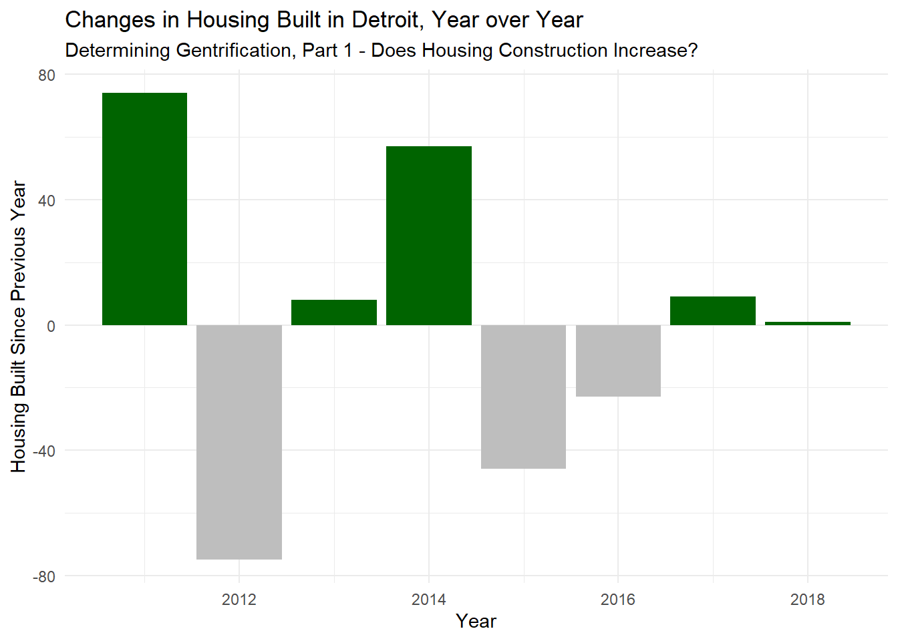
Verifying Gentrification Part b - Increase in College Educated Households
all_data_gentrify |>
ggplot() +
geom_col(data = filter(all_data_gentrify, edu_level_delta > 0),
aes(x = year,
y = edu_level_delta),
fill = 'darkgreen') +
geom_col(data = filter(all_data_gentrify, edu_level_delta <= 0),
aes(x = year,
y = edu_level_delta),
fill = 'gray') +
labs(title = 'Changes in Educational Attainment, Year over Year',
subtitle = 'Determining Gentrification, Part 2 - Is there an Increase in College-Educated Households?',
x = 'Year',
y = "% Change in Education Attainment") +
theme_minimal() +
annotate("text",
label = "Note: 'Educational Attainment' defined\nas having a Bachelor's Degree or Higher",
x = 2011,
y = -0.2,
hjust = 0,
size = 3,
fontface = 'italic')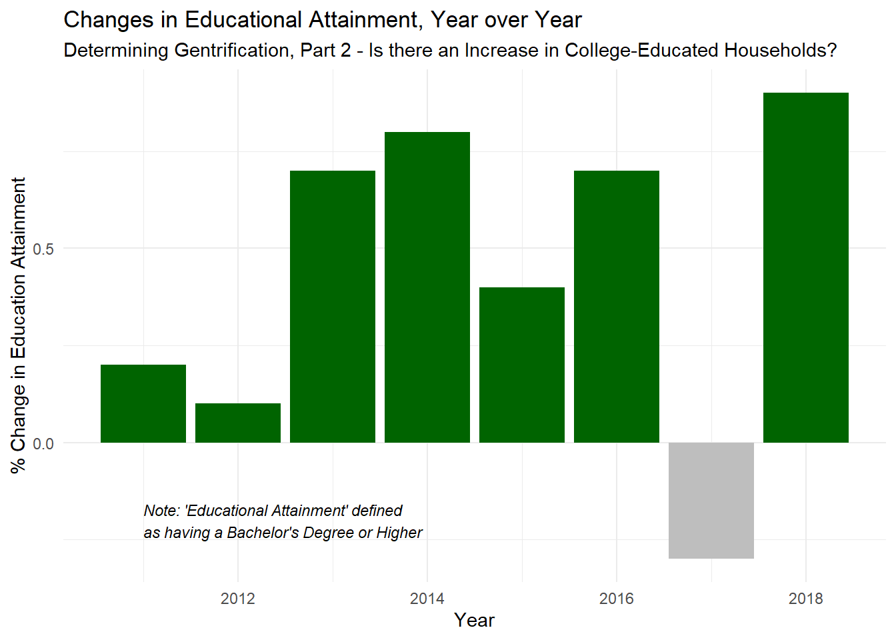
all_data_gentrify |>
pivot_longer(cols = contains('percent_educational_attainment') & !contains("25_years_and_over") & !contains('or_higher'),
names_to = 'education_level',
values_to = 'percent_at_level') |>
mutate(education_level = str_replace_all(education_level, "percent_educational_attainment_", ""),
education_level = str_replace_all(education_level, "9th_to_12th_grade_no_diploma", "Some High School"),
education_level = str_replace_all(education_level, "associates_degree", "Associate's Degree"),
education_level = str_replace_all(education_level, "bachelors_degree", "Bachelor's Degree"),
education_level = str_replace_all(education_level, "graduate_or_professional_degree", "Graduate Degree"),
education_level = str_replace_all(education_level, "high_school_graduate_includes_equivalency", "High School Graduate"),
education_level = str_replace_all(education_level, "less_than_9th_grade", "Less than 9th Grade"),
education_level = str_replace_all(education_level, "some_college_no_degree", "Some College")) |>
filter(education_level == "Associate's Degree" | education_level == "Bachelor's Degree" | education_level == "Graduate Degree" | education_level == "Some High School") |>
ggplot() +
geom_col(aes(x = year,
y = percent_at_level,
fill = factor(education_level,
ordered = TRUE,
levels = c("Associate's Degree",
"Some High School",
"Bachelor's Degree",
"Graduate Degree")))) +
facet_wrap(~education_level, ncol = 4) +
theme_minimal() +
theme(legend.position = 'none') +
scale_fill_manual(values = c('darkgreen', 'grey', 'darkgreen', 'darkgreen')) +
labs(title = "Population Education-Level Demographic Change, 2010-2018",
subtitle = 'Less High School Dropouts and More College Graduates',
x = "Year",
y = "% of Population at Education Level")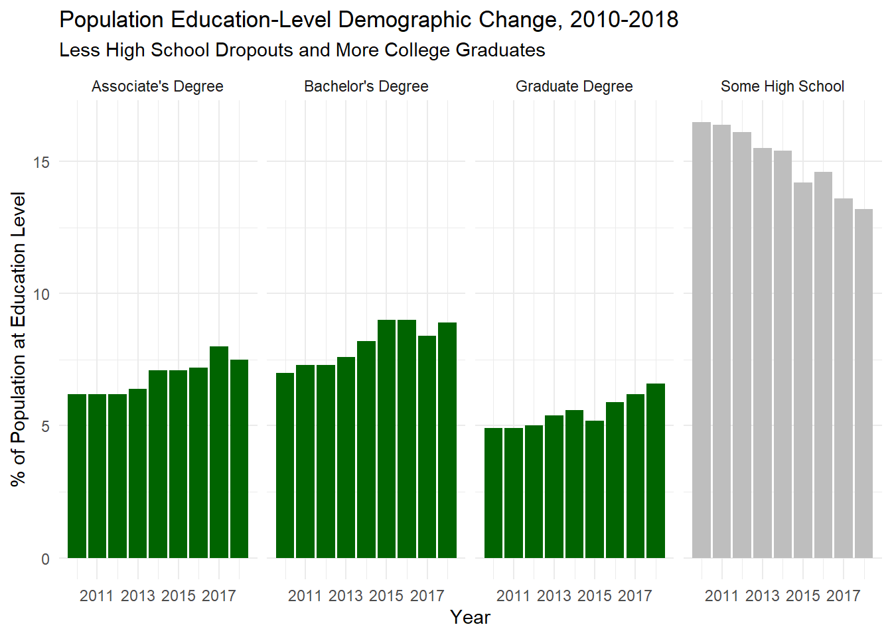
all_data_gentrify |>
pivot_longer(cols = contains('percent_educational_attainment') & !contains("25_years_and_over") & !contains('or_higher'),
names_to = 'education_level',
values_to = 'percent_at_level') |>
mutate(education_level = str_replace_all(education_level, "percent_educational_attainment_", ""),
education_level = str_replace_all(education_level, "9th_to_12th_grade_no_diploma", "Some High School"),
education_level = str_replace_all(education_level, "associates_degree", "Associate's Degree"),
education_level = str_replace_all(education_level, "bachelors_degree", "Bachelor's Degree"),
education_level = str_replace_all(education_level, "graduate_or_professional_degree", "Graduate Degree"),
education_level = str_replace_all(education_level, "high_school_graduate_includes_equivalency", "High School Graduate"),
education_level = str_replace_all(education_level, "less_than_9th_grade", "Less than 9th Grade"),
education_level = str_replace_all(education_level, "some_college_no_degree", "Some College")) |>
filter(education_level == "Associate's Degree" | education_level == "Bachelor's Degree" | education_level == "Graduate Degree" | education_level == "Some High School") |>
ggplot() +
geom_area(aes(x = year,
y = percent_at_level,
fill = factor(education_level,
ordered = TRUE,
levels = c("Graduate Degree",
"Bachelor's Degree",
"Associate's Degree",
"Some High School"
)))) +
theme_minimal() +
scale_fill_manual("Education Level", values = rev(carto.pal('green.pal', 4))) +
#scale_fill_brewer(palette = 'Greens') +
labs(title = "Population Education-Level Demographic Change, 2010-2018",
subtitle = 'Less High School Droups and More College Graduates',
x = "Year",
y = "% of Population at Education Level",
fill = 'Education Level')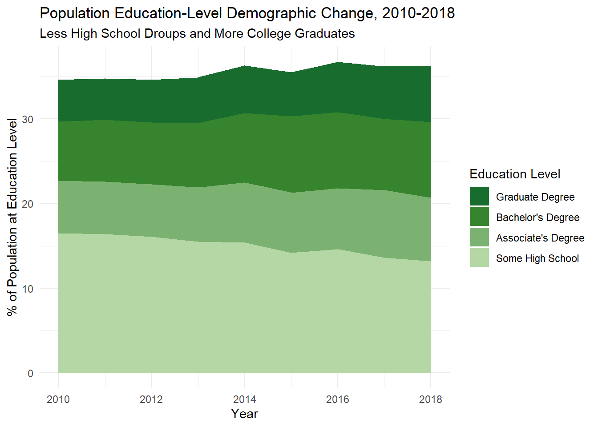
Verifying Gentrification Part c - Increase in Housing Costs
p1 <- all_data_gentrify |>
ggplot() +
geom_col(data = filter(all_data_gentrify, rent_delta > 0),
aes(x = year,
y = rent_delta),
fill = 'darkgreen') +
geom_col(data = filter(all_data_gentrify, rent_delta <= 0),
aes(x = year,
y = rent_delta),
fill = 'gray') +
labs(x = 'Year',
y = "Change in Median Rent") +
theme_minimal()
p2 <- all_data_gentrify |>
ggplot() +
geom_col(data = filter(all_data_gentrify, value_delta > 0),
aes(x = year,
y = value_delta),
fill = 'darkgreen') +
geom_col(data = filter(all_data_gentrify, value_delta <= 0),
aes(x = year,
y = value_delta),
fill = 'gray') +
labs(x = 'Year',
y = "Change in Median Housing Value") +
theme_minimal()
p1 + p2 + plot_annotation(title = 'Changes in Housing Costs, Year over Year',
subtitle = 'Determining Gentrification, Part 3 - Is there an Increase in the Cost of Housing?')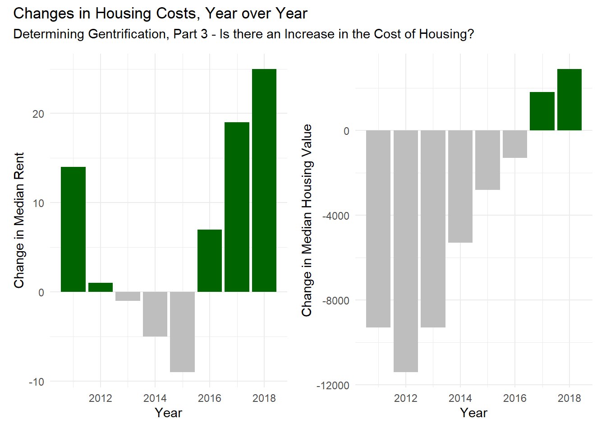
Combing All 4 Gentrification Metrics
all_data_gentrify |>
filter(year > 2010) |>
select(contains('delta')) |>
ggcorr(method = c("everything", "pearson"),
high = "darkgreen")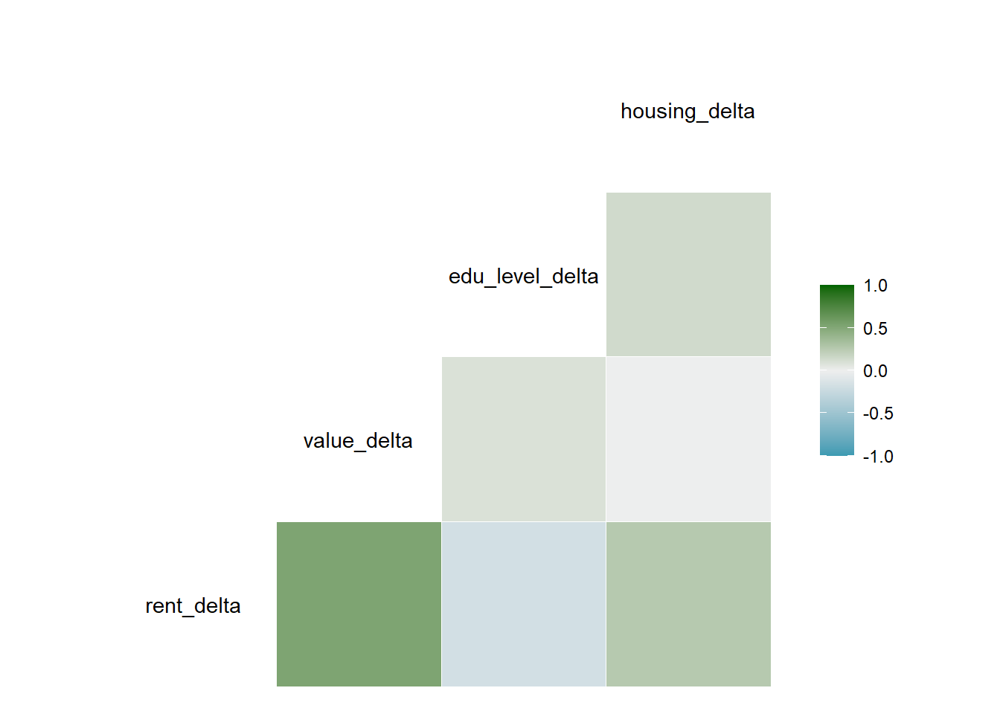
all_data_gentrify |>
mutate(shape_category = ifelse(housing_delta > 0,
"More Houses Built",
"Less Houses Built"),
size_category = ifelse(edu_level_delta > 0,
"Increase in College Educated Individuals",
"Decrease in College Educated Individuals"),
gentrify_category = ifelse((rent_delta > 0 | value_delta > 0)
& edu_level_delta > 0
& housing_delta > 0,
"Gentrifying", "Not Gentrifying")) |>
ggplot() +
geom_point(aes(x = rent_delta,
y = value_delta,
color = gentrify_category,
size = size_category,
shape = shape_category)) +
scale_color_manual(name = "Gentrification Criteria",
values = c("Not Gentrifying" = "gray",
"Gentrifying" = "darkgreen")) +
scale_size_manual(name = "Educational Attainment Changes",
values = c("Increase in College Educated Individuals" = 5,
"Decrease in College Educated Individuals" = 2)) +
scale_shape_manual(name = "Housing Changes",
values = c("Less Houses Built" = 15, "More Houses Built" = 17)) +
theme_minimal() +
geom_vline(aes(xintercept = 0), linetype="dashed", color = "black") +
geom_hline(aes(yintercept = 0), linetype="dashed", color = "black") +
theme_minimal() +
geom_text_repel(aes(x = rent_delta,
y = value_delta,
label = year)) +
labs(title = "When is Detroit Gentrifying?",
subtitle = "Only 2011 and 2018 fit all three criteria",
x = 'Change in Median Rent',
y = 'Change in Median Value',
color = 'Change in Housing Built',
size = 'Change in Educational Attainment')Warning: Removed 1 rows containing missing values (`geom_point()`).Warning: Removed 1 rows containing missing values (`geom_text_repel()`).
Relationships with Educational Outcomes
#Removing 2010 from all_data_gentrifying since we don't have deltas for those years and would need to fitler it every time otherwise
all_data_gentrify_final <- all_data_gentrify |>
filter(year != 2010)
all_data_gentrify_final# A tibble: 8 × 85
year rent_delta value_delta edu_level_delta housing_delta gentrifying
<dbl> <dbl> <dbl> <dbl> <int> <lgl>
1 2011 14 -9300 0.200 74 TRUE
2 2012 1 -11400 0.100 -75 FALSE
3 2013 -1 -9300 0.700 8 FALSE
4 2014 -5 -5300 0.800 57 FALSE
5 2015 -9 -2800 0.400 -46 FALSE
6 2016 7 -1300 0.700 -23 FALSE
7 2017 19 1800 -0.300 9 FALSE
8 2018 25 2900 0.9 1 TRUE
# ℹ 79 more variables: housing_built <int>,
# estimate_educational_attainment_population_25_years_and_over <dbl>,
# estimate_educational_attainment_less_than_9th_grade <dbl>,
# estimate_educational_attainment_9th_to_12th_grade_no_diploma <dbl>,
# estimate_educational_attainment_high_school_graduate_includes_equivalency <dbl>,
# estimate_educational_attainment_some_college_no_degree <dbl>,
# estimate_educational_attainment_associates_degree <dbl>, …#Create the boxplot
p1 <- all_data_gentrify_final |>
ggplot() +
geom_boxplot(aes(x = gentrifying,
y = total_enrollment,
fill = factor(all_data_gentrify_final$gentrifying,
levels = c("FALSE",
"TRUE")))) +
theme_minimal() +
scale_fill_manual("Gentrifying", values = c("grey", "darkgreen")) +
theme(legend.position = 'none') +
labs(title = 'Gentrifying Years Have Larger Enrollment',
x = 'Gentrifying Years',
y = 'Total Enrollment')
#Create the line plot
p2 <- all_data_gentrify_final |>
ggplot() +
geom_line(aes(x = year,
y = total_enrollment,
group = 1),
color = 'grey',
linewidth = 1.5) +
geom_point(data = filter(all_data_gentrify_final, as.character(gentrifying) == "TRUE"),
aes(x = year,
y = total_enrollment),
color = 'darkgreen',
size = 4) +
theme_minimal() +
theme(legend.position = 'none') +
labs(x = 'Year',
y = 'Total Enrollment')
#Combine the two plots
grid.arrange(p1, p2, ncol = 1)Warning: Use of `all_data_gentrify_final$gentrifying` is discouraged.
ℹ Use `gentrifying` instead.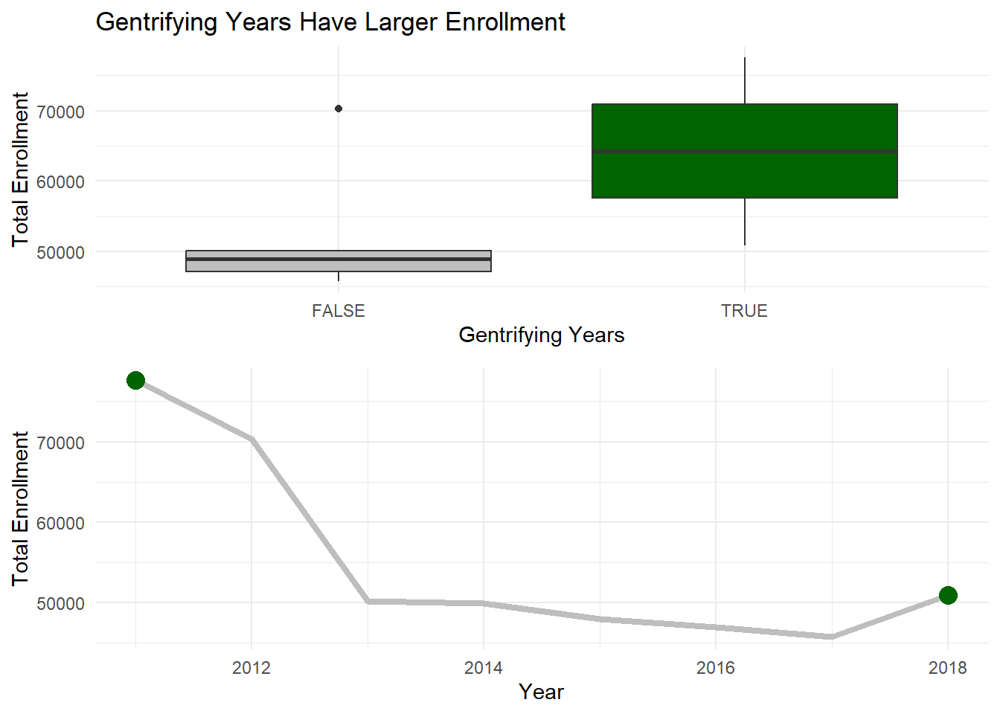
all_data_gentrify_final |>
pivot_longer(cols = contains('enrollment') & !starts_with('grade') & !starts_with('kinder') & !starts_with('total'),
names_to = 'enrollment_group',
values_to = 'enrollment_number') |>
mutate(pct_total_enrollment = 100*enrollment_number/total_enrollment,
enrollment_group = str_replace_all(enrollment_group, "_enrollment", ""),
enrollment_group = str_replace_all(enrollment_group, "_", " ")) |>
select(enrollment_group, enrollment_number, total_enrollment, pct_total_enrollment, everything()) |>
ggplot(aes(x = enrollment_group,
y = pct_total_enrollment)) +
geom_boxplot(aes(fill = gentrifying)) +
scale_fill_manual("Gentrifying", values = c('grey', 'darkgreen')) +
labs(title = "Who Shows Up for Class?",
subtitle = "Gentrification's Relationship to Enrollment in Detroit (by Groups)",
x = "Group",
y = "Percent of Total Enrollment") +
theme_minimal() +
theme(legend.position = 'bottom') +
coord_flip() 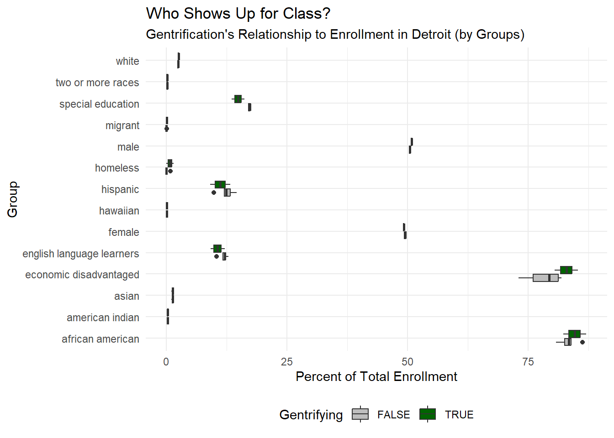
#Create a new data frame with 'pct_ready' column
all_data_gentrify_pct_ready_pivot <- all_data_gentrify_final |>
pivot_longer(cols = contains('ready'),
names_to = 'subject_readiness',
values_to = 'pct_ready') |>
mutate(subject_readiness = str_replace_all(subject_readiness, "grade_11_", ""),
subject_readiness = str_replace_all(subject_readiness, "all_subject_percent_ready", "Percent Ready on All Subjects"),
subject_readiness = str_replace_all(subject_readiness, "english_percent_ready", "Percent Ready on English"),
subject_readiness = str_replace_all(subject_readiness, "math_percent_ready", "Percent Ready on Math"))
all_data_gentrify_pct_ready_pivot |>
ggplot() +
geom_boxplot(aes(x = gentrifying,
y = pct_ready,
fill = gentrifying),
alpha = 0.9) +
scale_fill_manual(values = c("grey", "darkgreen")) +
facet_grid(~subject_readiness) +
labs(title = "Gentrification's Relationship To Academic Achievement",
subtitle = "11th Grade Student's Median Scores in English and Math Drop in Gentrifying Years",
x = "Gentrifying Year",
y = "Percent of Students 'Ready' for College Level Work") +
theme(legend.position = 'none') 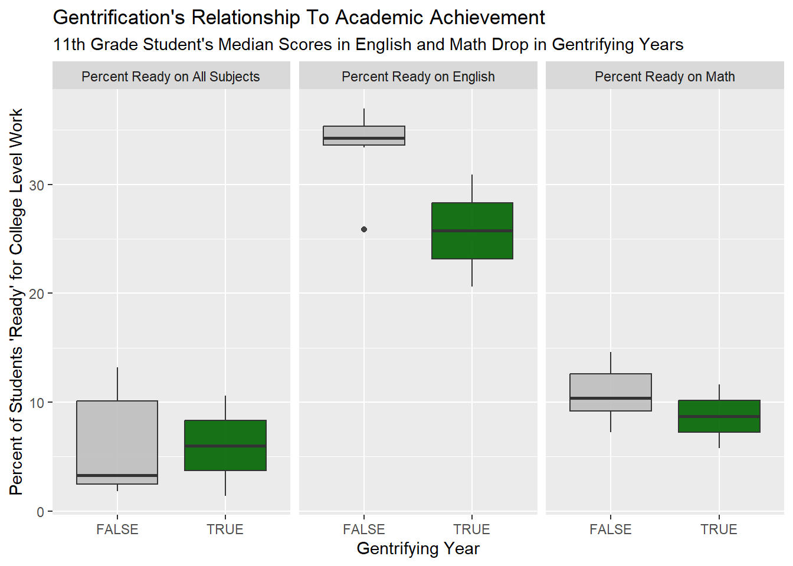
all_data_gentrify_final |>
pivot_longer(cols = contains("graduation"),
names_to = 'grad_rate_timeframe',
values_to = 'grad_rate') |>
mutate(grad_rate_timeframe = str_replace_all(grad_rate_timeframe,
"graduation_rate_4_year",
"4 Year Graduation Rate"),
grad_rate_timeframe = str_replace_all(grad_rate_timeframe,
"graduation_rate_5_year",
"5 Year Graduation Rate"),
grad_rate_timeframe = str_replace_all(grad_rate_timeframe,
"graduation_rate_6_year",
"6 Year Graduation Rate")) |>
ggplot(aes(x = grad_rate_timeframe,
y = grad_rate)) +
geom_boxplot(aes(fill = gentrifying)) +
scale_fill_manual("Gentrifying", values = c("grey", "darkgreen")) +
labs(title = "Gentrification's Relationship to Graduation Rate",
subtitle = 'Students Take Longer to Graduate in Gentriying Years',
x = 'Graduation Rate Time Frame',
y = 'Graduation Rate') +
theme_minimal()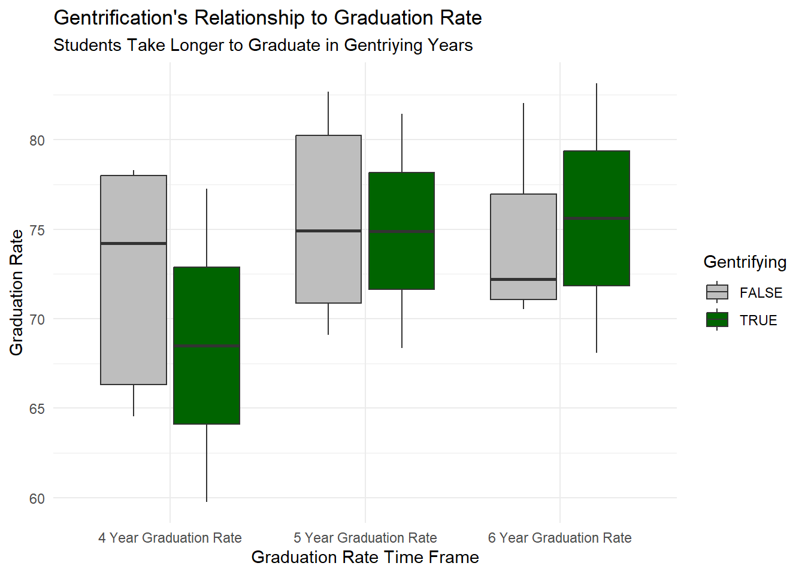
all_data_gentrify_grad_rate_pivot <- all_data_gentrify_final |>
pivot_longer(cols = contains("graduation"),
names_to = 'grad_rate_timeframe',
values_to = 'grad_rate') |>
mutate(grad_rate_timeframe = str_replace_all(grad_rate_timeframe,
"graduation_rate_4_year",
"4 Year Graduation Rate"),
grad_rate_timeframe = str_replace_all(grad_rate_timeframe,
"graduation_rate_5_year",
"5 Year Graduation Rate"),
grad_rate_timeframe = str_replace_all(grad_rate_timeframe,
"graduation_rate_6_year",
"6 Year Graduation Rate"))
all_data_gentrify_grad_rate_pivot |>
ggplot() +
geom_line(aes(x = year,
y = grad_rate),
color = 'lightgreen',
linewidth = 2) +
geom_point(data = filter(all_data_gentrify_grad_rate_pivot, as.character(gentrifying) == "TRUE"),
aes(x = year,
y = grad_rate),
color = 'darkgreen',
size = 3.5) +
facet_grid(~grad_rate_timeframe) +
labs(title = "Gentrification's Relationship to Graduation Rate",
#subtitle = 'Students Take Longer to Graduate in Gentriying Years',
x = 'Year',
y = 'Graduation Rate') 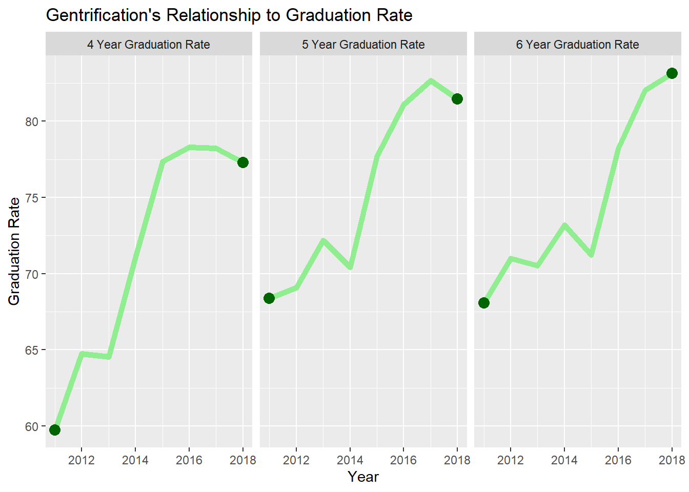
all_data_gentrify_drop_rate_pivot <- all_data_gentrify_final |>
pivot_longer(cols = contains("dropout"),
names_to = 'dropout_rate_timeframe',
values_to = 'dropout_rate') |>
mutate(dropout_rate_timeframe = str_replace_all(dropout_rate_timeframe,
"dropout_rate_4_year",
"4 Year Droupout Rate"),
dropout_rate_timeframe = str_replace_all(dropout_rate_timeframe,
"dropout_rate_5_year",
"5 Year Droupout Rate"),
dropout_rate_timeframe = str_replace_all(dropout_rate_timeframe,
"dropout_rate_6_year",
"6 Year Droupout Rate"))
all_data_gentrify_drop_rate_pivot |>
ggplot() +
geom_line(aes(x = year,
y = dropout_rate),
color = 'lightgreen',
linewidth = 2) +
geom_point(data = filter(all_data_gentrify_drop_rate_pivot, as.character(gentrifying) == "TRUE"),
aes(x = year,
y = dropout_rate),
color = 'darkgreen',
size = 3.5) +
facet_grid(~dropout_rate_timeframe) +
labs(title = "Gentrification's Relationship to Dropout Rate",
#subtitle = 'Students Take Longer to Graduate in Gentriying Years',
x = 'Year',
y = 'Dropout Rate') 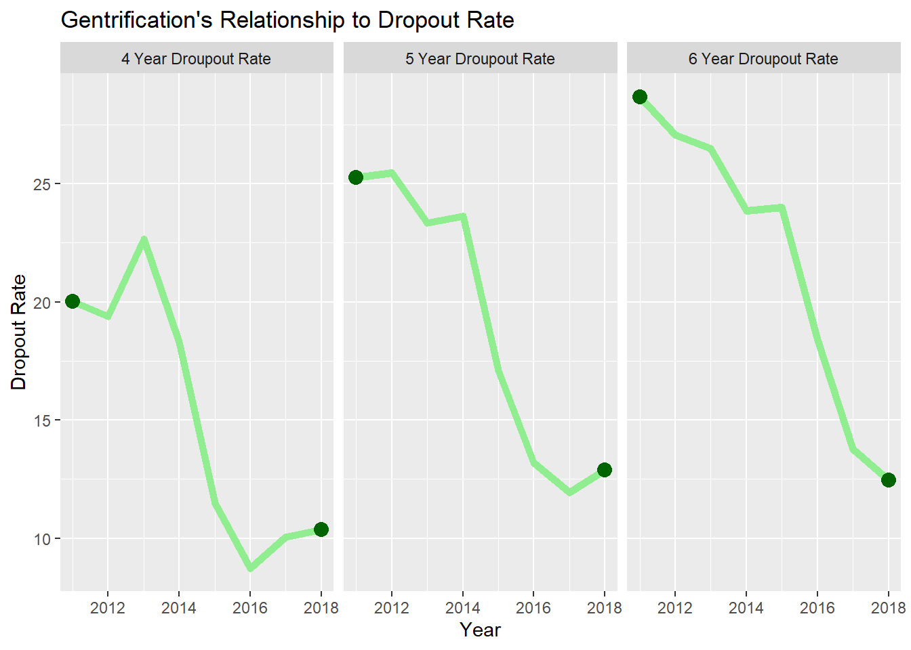
all_data_gentrify_final |>
pivot_longer(cols = contains("dropout"),
names_to = 'dropout_rate_timeframe',
values_to = 'dropout_rate') |>
mutate(dropout_rate_timeframe = str_replace_all(dropout_rate_timeframe,
"dropout_rate_4_year",
"4 Year Dropout Rate"),
dropout_rate_timeframe = str_replace_all(dropout_rate_timeframe,
"dropout_rate_5_year",
"5 Year Dropout Rate"),
dropout_rate_timeframe = str_replace_all(dropout_rate_timeframe,
"dropout_rate_6_year",
"6 Year Dropout Rate")) |>
ggplot(aes(x = dropout_rate_timeframe,
y = dropout_rate)) +
geom_boxplot(aes(fill = gentrifying)) +
scale_fill_manual("Gentrifying", values = c("grey", "darkgreen")) +
labs(title = "Gentrification's Relationship to Dropout Rate",
subtitle = 'Rates of Dropout Are Consistent or Lower in Gentirfying Years',
x = 'Dropout Rate Time Frame',
y = 'Dropout Rate') +
theme_minimal()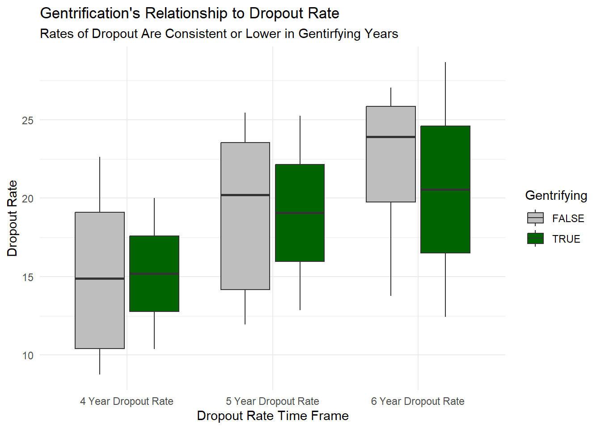
ggplot(data = all_data_gentrify_pct_ready_pivot) +
geom_line(aes(x = year,
y = pct_ready),
color = 'lightgreen',
linewidth = 2) +
geom_point(data = filter(all_data_gentrify_pct_ready_pivot, as.character(gentrifying) == "TRUE"),
aes(x = year,
y = pct_ready),
color = 'darkgreen',
size = 3.5) +
facet_wrap(~subject_readiness) +
labs(title = "Investigating 'All Subjects'",
subtitle = "In gentrifying years, 11th grade students score lower on standardized tests\nthan in years around the gentirfying years",
x = "Year",
y = "Percent of Students 'Ready' for College Level Work")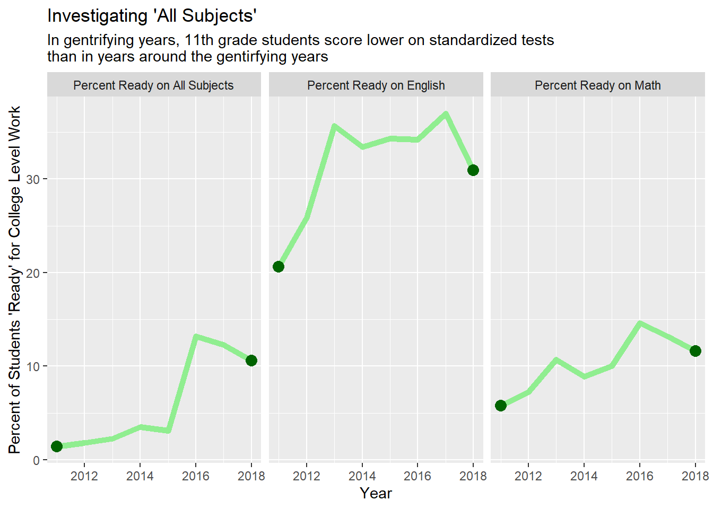